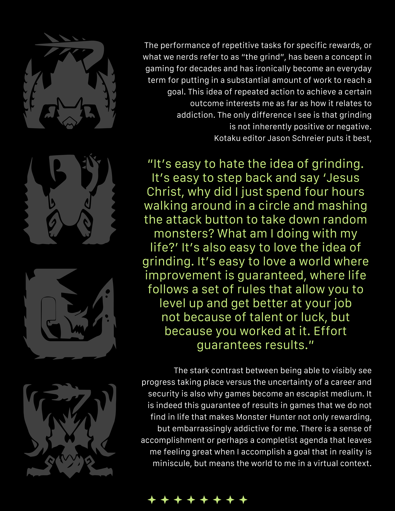

Nergigante: "A terrible elder dragon that appears when other elders are in the vicinity. Its penchant for destruction is well-documented. Nergigante can recover from wounds almost instantaneously. Regenerated body parts grow harder over time, so attacking them while they're still fresh is the ideal strategy."
Great Jagras: "The pack leader of the Jagras. When hungry, Great Jagras are known to attack monsters even stronger than themselves. It balloons to unbelievable proportions after swallowing prey. Even after a giant meal, a Great Jagras can use its expanded stomach to attack unsuspecting hunters. Aim for its belly to force it to vomit out its prey and significantly weaken it."
Kulu-Ya-Ku: "An odd bird wyvern that has developed limbs capable of carrying weapons. It's been spotted stealing eggs from nests found in the Ancient Forest and Wildspire Waste. Kulu-Ya-Ku can use small boulders to shield itself or smash against its enemies. Force it to drop whatever its holding by using your slinger. You can also frighten it by luring one of its natural enemies."
Kulu-Ya-Ku: "An odd bird wyvern that has developed limbs capable of carrying weapons. It's been spotted stealing eggs from nests found in the Ancient Forest and Wildspire Waste. Kulu-Ya-Ku can use small boulders to shield itself or smash against its enemies. Force it to drop whatever its holding by using your slinger. You can also frighten it by luring one of its natural enemies."
Pukei-Pukei:"A bird wyvern known to possess poisonous toxins in its body. It's been spotted storing scatternuts in its mouth or tail, coating them with poison and spitting them out at threats. Observational reports state that Pukei-Pukei will bully weaker monsters but cower before bigger, stronger monsters. It's prone to retreating at the first sign of danger, so use that to your advantage."
Tobi Kadachi: "A fanged wyvern that flies among the trees of the Ancient Forest. Its penchant to brush against the ground and the trees as it moves around builds up static electricity in its fur. Use the target camera to avoid getting ambushed from behind as it moves from tree to tree. The key to defeating the monster is to immobilize it and prevent it from reaching a charged state."
Tobi Kadachi: "A fanged wyvern that flies among the trees of the Ancient Forest. Its penchant to brush against the ground and the trees as it moves around builds up static electricity in its fur. Use the target camera to avoid getting ambushed from behind as it moves from tree to tree. The key to defeating the monster is to immobilize it and prevent it from reaching a charged state."
Barroth: "Barroth seek out ants, their favorite snack, and mark their territory with mud. They attack potential rivals with their devastating charging attack. While it uses hardened mud as armor, Barroth can also fling it off its body as an attack. Use water element weapons or your slinger to gradually knock off its mud."
Legiana: "The apex monster of the Coral Highlands, whose diet primarily consists of Raphinos. It emits a chilling wind from its body, which dulls its prey's ability to escape. The membrane that covers its entire body enables Legiana to move with incredible speed. Damaging this membrane should help with slowing it down. Poison attacks have also been known to be effective."
Paolumu: "Paolumu feast on eggs in the Coral Highlands. They are able to float through the air using unique sacs in their bodies, and attack with their extremely hard tails. Paolumu can't move around as freely when its air sacs are deflated. Aim for its inflated body parts, orpurposefully draw out its attacks that use up stored air, to gain the upper hand."
Anjanath: "The Anjanath patrols the Ancient Forest, looking for its favorite meal, Aptonoth. This belligerent monster will attack anything without hesitation. Anjanath spits fiery blasts from its mouth utilizing a unique organ in its throat. Focusing attacks on its throat will make battling it much easier."
Paolumu: "Paolumu feast on eggs in the Coral Highlands. They are able to float through the air using unique sacs in their bodies, and attack with their extremely hard tails. Paolumu can't move around as freely when its air sacs are deflated. Aim for its inflated body parts, orpurposefully draw out its attacks that use up stored air, to gain the upper hand."
Anjanath: "The Anjanath patrols the Ancient Forest, looking for its favorite meal, Aptonoth. This belligerent monster will attack anything without hesitation. Anjanath spits fiery blasts from its mouth utilizing a unique organ in its throat. Focusing attacks on its throat will make battling it much easier."
Silver Rathalos: "A rare silver-scaled Rathalos species. When wreathed in hellfire, its breath grows more lethal and it gains a new set of attacks. The hellfire can be dispelled by dealing a set amount of damage to its head. It lives in tandem with a Gold Rathian, and their breath becomes deadlier still when combined."
Gold Rathian: "A rare gleaming gold-scaled Rathian species. When wreathed in hellfire, its breath grows more lethal and its tail swipes broader. The hellfire can be dispelled by dealing a set amount of damage to its head, which is extremely tough until broken. Try to destroy it as quickly as possible."
Nargacuga: "Extremely agile, especially on the ground, this obsidian-furred flying wyvern moves with explosive bursts of speed. Nargacuga's speed dulls when exhausted, so luring it into turf wars with other monsters is effective. Take care when setting traps, as it will destroy pitfalls when not enraged."
Barioth: "The snow-white flying wyvern with huge tusks found in the frozen tundra. It uses its forelegs and tail to traverse ice with ease. Break its tail, or especially its forelegs to mitigate both its offense and its mobility. The monster's hide is extremely tough, but fire elemental attacks should prove effective."
Glavenus: "A brute wyvern that wields its heavy, blue tail like a blade. It grows hotter and more keen with each strike until it glows red. Once red hot, its tail will begin to rust and the monster will sharpen it anew with its fangs, storing the slag to expel as fiery breath. Strike its throat when it glows red."
Yian Garuga: "A short-tempered bird wyvern marked by its hard, black scales and impressive mane. It strikes with its distinctive beak. Yian Garuga moves violently with its entire body, enough to break pitfall traps when enraged. Slow it by breaking body parts or baiting out its stamina-intensive beak attacks."
Barioth: "The snow-white flying wyvern with huge tusks found in the frozen tundra. It uses its forelegs and tail to traverse ice with ease. Break its tail, or especially its forelegs to mitigate both its offense and its mobility. The monster's hide is extremely tough, but fire elemental attacks should prove effective."
Glavenus: "A brute wyvern that wields its heavy, blue tail like a blade. It grows hotter and more keen with each strike until it glows red. Once red hot, its tail will begin to rust and the monster will sharpen it anew with its fangs, storing the slag to expel as fiery breath. Strike its throat when it glows red."
Yian Garuga: "A short-tempered bird wyvern marked by its hard, black scales and impressive mane. It strikes with its distinctive beak. Yian Garuga moves violently with its entire body, enough to break pitfall traps when enraged. Slow it by breaking body parts or baiting out its stamina-intensive beak attacks."
Odogaron: "A terrifying monster that scours the Rotten Vale for carrion. Its highly aggressive nature means that anything, be it monster or man, is a potential meal. Odogaron's nasty claws cause heavy bleeding and should be avoided at all costs. Use meat to lure it into traps, stagger it, or coerce it into bouts of rage to tire it out and make it easier to deal with."
Tigrex: "A flying wyvern straight out of prehistory, known for its deafening roar and powerful legs that drive its overwhelming charge. Ledges and obstacles won't stop Tigrex's charge, so you'll need to steer clear. After enough repetitions the monster will tire and slow down, opening up to counterattacks."
Brachydios: "This marine-blue brute wyvern uses its saliva to prime the sticky slime coating its massive arms, rendering it highly explosive. Its scalp secretes a thick slime capable of tripping hunters who step in it. Water will dilute it however, making water and ice attacks to its head and arms effective."
Zinogre: "Lightning courses through the fur and unique plating of this fanged wyvern. It is most deadly in its supercharged state. When supercharged, parts of the monster become soft, but shock traps no longer work. You can also knock it out of supercharged mode by making it flinch several times. Once itis down, you can use the capture net to collect materials."
Tigrex: "A flying wyvern straight out of prehistory, known for its deafening roar and powerful legs that drive its overwhelming charge. Ledges and obstacles won't stop Tigrex's charge, so you'll need to steer clear. After enough repetitions the monster will tire and slow down, opening up to counterattacks."
Brachydios: "This marine-blue brute wyvern uses its saliva to prime the sticky slime coating its massive arms, rendering it highly explosive. Its scalp secretes a thick slime capable of tripping hunters who step in it. Water will dilute it however, making water and ice attacks to its head and arms effective."
Zinogre: "Lightning courses through the fur and unique plating of this fanged wyvern. It is most deadly in its supercharged state. When supercharged, parts of the monster become soft, but shock traps no longer work. You can also knock it out of supercharged mode by making it flinch several times. Once itis down, you can use the capture net to collect materials."